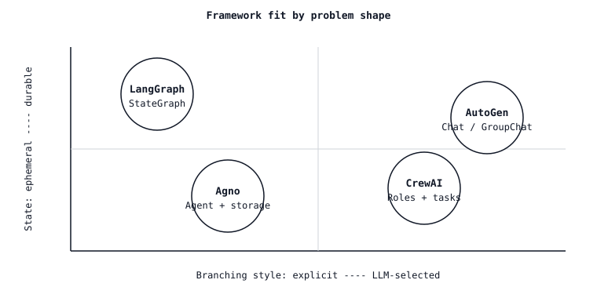

Agent Framework Tradeoffs — Graph, Role, and Actor Orchestration
Every framework sells the same demo (research agent builds a report) and hides the same bug (state schema fights with the orchestration layer). Pick the framework whose abstractions match the shape of your problem; everything else is glue you write twice.
- Type
- Learn
- Languages
- Python
- Prerequisites
- Phase 11 · 09 (Function Calling), Phase 11 · 16 (LangGraph)
- Time
- ~45 minutes
#The Problem
You have a task that needs more than one LLM call. Maybe it is a research workflow (plan, search, summarize, cite). Maybe it is a code-review pipeline (parse diff, critique, patch, validate). Maybe it is a multi-turn assistant that books flights, writes emails, and files expense reports. You pick a framework.
Three days later, you discover the framework's abstractions leak. CrewAI gives you roles but fights you when the "researcher" needs to hand a structured plan to the "writer." AutoGen gives you chat between agents but has no first-class state so your checkpoint is a pickle of a conversation log. LangGraph gives you a state graph but forces you to name every transition before you know what the agent will do. Agno gives you a single-agent abstraction that screams when you try to fan out to three concurrent workers.
The fix is not "pick the best framework." It is to match the framework's core abstraction to the shape of your problem. This lesson draws that map.
#The Concept

Four frameworks dominate the 2026 landscape. Their core abstractions are not the same.
| Framework | Core abstraction | Best fit | Worst fit |
|---|---|---|---|
| LangGraph | StateGraph — typed state, nodes, conditional edges, checkpointer. |
Workflows with explicit state and human-in-the-loop interrupts; production agents needing time-travel debugging. | Loose, role-driven brainstorming where the topology is unknown. |
| CrewAI | Crew — roles (goal, backstory), tasks, process (sequential or hierarchical). |
Role-playing or persona-driven workflows with a short linear/hierarchical plan. | Anything stateful beyond the crew's turn history; complex branching. |
| AutoGen | ConversableAgent pair — two or more agents that speak in turns until an exit condition. |
Multi-agent dialogue (teacher-student, proposer-critic, actor-reviewer) where the thinking emerges from the chat. | Deterministic workflows with a known DAG; anything needing durable state across restarts. |
| Agno | Agent — a single LLM + tools + memory, composable into teams. |
Fast-to-build single agents and lightweight teams; strong multi-modality and built-in storage drivers. | Deep, explicitly-branched graphs with custom reducers. |
#What "abstraction" actually means
A framework's core abstraction is the thing you draw on the whiteboard when you pitch the architecture.
- LangGraph → you draw a graph. Nodes are steps, edges are transitions, and the state object at every point is typed. The mental model is a state machine.
- CrewAI → you draw an org chart. Each role has a job description and a manager routes tasks. The mental model is a small team of specialists.
- AutoGen → you draw a Slack DM. Two agents message each other; a third joins if you need a moderator. The mental model is chat.
- Agno → you draw a single box with tools hanging off it. Put boxes next to each other for a team. The mental model is "agent with batteries included."
#The state question
State is where most framework choices break down in production.
- LangGraph. Typed state (
TypedDictor Pydantic model), per-field reducers, first-class checkpointer (SQLite/Postgres/Redis). Resume, interrupt, and time-travel are free. (See Phase 11 · 16.) - CrewAI. State flows as strings between tasks via the
contextfield, or structured throughoutput_pydantic. No durable per-crew store out of the box; you bolt on your own if the crew must survive a restart. - AutoGen. State is the chat history and any user-defined
context. Conversation transcripts persist; arbitrary workflow state does not unless you write adapters. - Agno. Built-in storage drivers (SQLite, Postgres, Mongo, Redis, DynamoDB) attached to an
Agentviastorage=— conversation sessions and user memories persist automatically. Not a full graph checkpointer; a session store.
#The branching question
Every non-trivial agent branches. Who decides the branch matters.
- LangGraph — you decide, via conditional edges. Routing is a Python function with named branches. Branches are first-class in the compiled graph; the checkpointer records which branch was taken.
- CrewAI — the manager decides in hierarchical mode; in sequential mode you decide at build time. Routing is implicit in the task list; there is no first-class "if" outside the manager's prompt.
- AutoGen — the agents decide via chat. Branching is emergent from who speaks next.
GroupChatManagerselects the next speaker; you can hand-write aspeaker_selection_methodbut the default is LLM-driven. - Agno — the agent decides by which tool to call next. Teams have a coordinator/router/collaborator mode; branching beyond that is the developer's responsibility.
#The observability question
- LangGraph — OpenTelemetry via LangSmith or any OTel exporter. Every node transition is a trace span; checkpoints double as replayable traces. LangSmith is the first-party option; Langfuse/Phoenix also have adapters.
- CrewAI — first-class OpenTelemetry since late-2025; integrations with Langfuse, Phoenix, Opik, AgentOps.
- AutoGen — OpenTelemetry integration via
autogen-core; AgentOps and Opik have connectors. Tracing granularity is per-agent-message, not per-node. - Agno — built-in
monitoring=Trueflag plus OpenTelemetry exporters; tight integration with Langfuse for session traces.
#Cost and latency
All four frameworks add per-call overhead (framework logic, validation, serialization). Rough order of increasing overhead: Agno ≈ LangGraph < CrewAI ≈ AutoGen. The difference is dominated by how much extra LLM routing the framework does. CrewAI's hierarchical manager spends tokens deciding who goes next; AutoGen's GroupChatManager likewise. LangGraph only spends tokens where you write llm.invoke. Agno's single-agent path is thin.
When cost per run matters, prefer explicit routing (LangGraph edges, AutoGen speaker_selection_method) over LLM-selected routing.
#Interoperability
- LangGraph ↔ LangChain tools, retrievers, LLMs. First-class MCP adapter (tools imported as MCP servers).
- CrewAI ↔ tools inherit from
BaseTool; LangChain tools, LlamaIndex tools, and MCP tools all adapt in. Crew-to-crew delegation viaallow_delegation=True. - AutoGen →
FunctionToolwraps any Python callable; MCP adapter available. Tight coupling to AG2 ecosystem for agent-to-agent patterns. - Agno →
@tooldecorator or BaseTool subclass; MCP adapter; tools can be shared across agents and teams.
#The Skill
You can explain, in one sentence, why a given framework is right for a given agent problem.
Pre-build checklist:
- Draw the shape. Is this a graph (typed state, named transitions)? A role play (specialists hand off work)? A chat (agents talk until done)? A single agent with tools?
- Decide who branches. Developer-decided branching → LangGraph. Manager-agent-decided → CrewAI hierarchical. Chat-emergent → AutoGen. Tool-call-decided → Agno.
- Check the state budget. Do you need resume-from-checkpoint? Time-travel? Human interrupts mid-run? If yes, LangGraph is the default; Agno sessions cover conversation-scoped state.
- Check the cost budget. LLM-selected routing costs extra tokens per turn. If the agent runs thousands of times a day, prefer explicit routing.
- Budget the framework overhead. Every framework is another dependency. If the task is two LLM calls and a tool, write 30 lines of plain Python; no framework is cheaper than no framework.
Refuse to reach for a framework before you can draw the graph, the org chart, the chat, or the agent box. Refuse to pick one that forces you to fight its state model for the thing you actually need.
#The Decision Matrix
| Problem shape | Preferred framework | Why |
|---|---|---|
| Workflow DAG with typed state, human approvals, long-running | LangGraph | First-class state, checkpointer, interrupts, time-travel. |
| Research / writing pipeline with distinct roles | CrewAI (sequential) or LangGraph subgraphs | Role-per-task is cheap to express in CrewAI; scale up with LangGraph when branching gets complex. |
| Proposer-critic or teacher-student dialogue | AutoGen | Two-agent chat is its native shape. |
| Single agent with tools, sessions, memory | Agno | Thinnest setup, built-in storage and memory. |
| Thousands of parallel fanouts with reducers | LangGraph + Send |
The only one with a first-class parallel-dispatch API. |
| Quick prototype, no framework commitment | Plain Python + provider SDK | No framework is the fastest framework. |
#Exercises
- Easy. Take the same task — "research Anthropic's headquarters, write a 200-word brief, cite sources" — and implement it in LangGraph (four nodes: plan, search, write, cite) and in CrewAI (three roles: researcher, writer, editor). Report token cost per run and lines of code.
- Medium. Build the same task in AutoGen (researcher ↔ writer chat, editor joins via
GroupChat) and Agno (a single agent withsearch_toolsandwrite_tools, plus a session store). Rank the four implementations on (a) cost per run, (b) ability to resume after a crash, (c) ability to inject a human approval before the write step. - Hard. Build a decision-tree script
pick_framework.pythat takes a short problem description (JSON:{has_typed_state, has_roles, has_dialogue, has_parallel_fanout, needs_resume}) and returns a recommendation with one-sentence justification. Verify it on six cases you design yourself.
#Key Terms
| Term | What people say | What it actually means |
|---|---|---|
| Orchestration | "How the agents coordinate" | The layer that decides which node/role/agent runs next. |
| Durable state | "Resume after a restart" | State that survives process death, attached to a checkpoint or session store. |
| LLM-selected routing | "Let the model decide" | A planner LLM picks the next step each turn; flexible but pays tokens on every decision. |
| Explicit routing | "Developer decides" | A Python function or static edge picks the next step; cheap and auditable. |
| Crew | "A CrewAI team" | Roles + tasks + process (sequential or hierarchical) bound into a single runnable. |
| GroupChat | "AutoGen's multi-agent chat" | A managed conversation between N agents with a speaker selector. |
| Team (Agno) | "Multi-agent Agno" | Route / coordinate / collaborate mode over a set of agents. |
| StateGraph | "LangGraph's graph" | Typed-state, node, conditional-edge, checkpointer abstraction. |
#Further Reading
- LangGraph documentation — StateGraph, checkpointers, interrupts, time-travel.
- CrewAI documentation — Crews, Flows, Agents, Tasks, Processes.
- AutoGen documentation — ConversableAgent, GroupChat, teams, tools.
- Agno documentation — Agent, Team, Workflow, storage, memory.
- Anthropic — Building effective agents (Dec 2024) — pattern library (prompt chaining, routing, parallelization, orchestrator-workers, evaluator-optimizer) framework-agnostic.
- Yao et al., "ReAct: Synergizing Reasoning and Acting" (ICLR 2023) — the loop every framework dresses up.
- Wu et al., "AutoGen: Enabling Next-Gen LLM Applications via Multi-Agent Conversation" (2023) — AutoGen's design paper.
- Park et al., "Generative Agents: Interactive Simulacra of Human Behavior" (UIST 2023) — role-play foundation that CrewAI-style persona stacks build on.
- Phase 11 · 16 (LangGraph) — the framework this lesson benchmarks against.
- Phase 11 · 19 (Reflexion) — a pattern that maps cleanly to LangGraph but awkwardly to CrewAI.
- Phase 11 · 22 (Production observability) — how to instrument whichever framework you pick.